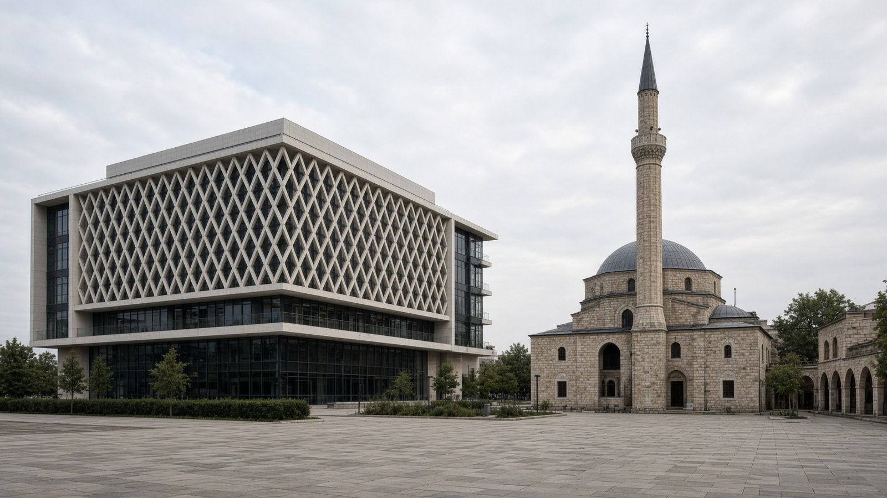

أوروبا
كوسوفو
Kosovo
البلقان الغربي.
- العاصمة
- بريشتينا
- نظام الحكم
- جمهورية
- إعلان الاستقلال
- 17 فبراير 2008
- النوع
- جمهورية
منذ التأسيس
أعلن كوسوفو استقلاله في 17 فبراير 2008. عاصمته بريشتينا.
معالم
- معلمبريشتينا
العاصمة.
- معماردير فيسوكي ديتشاني
يونسكو.
- طبيعةجبال شار
حدود.